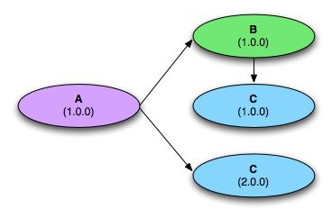
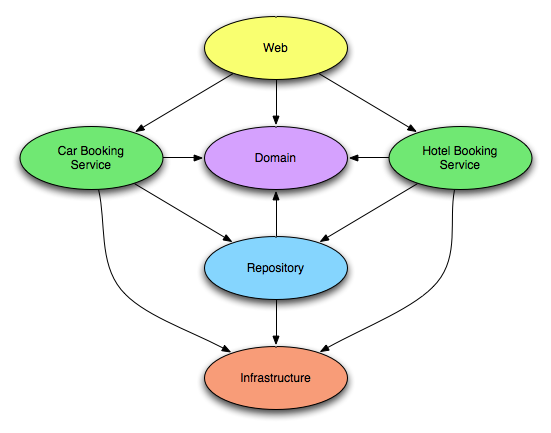

Deployment Architecture
The Virgo for Apache Tomcat offers several choices when it comes to deploying applications. Each choice offers certain advantages, and it is important to understand those in order to make the right choice for your application. In this chapter, we take a closer look at the choices offered, compare them, and provide guidelines in choosing the right one based on your specific needs.
The VTS supports standard self-contained WAR files thus allowing you to use the Virgo for Apache Tomcat as an enhanced web server. The VTS also supports the Shared Libraries WAR format which allows for slimmer WAR files that depend on OSGi bundles instead of including JAR files inside the WAR. The Shared Services WAR format allows developers to further reduce the complexity of standard WARs by deploying services and infrastructure bundles alongside the WAR. A shared services WAR will then consume the services published by those bundles. To complete the picture, the VTS supports the new OSGi-standard Web Application Bundle deployment format for web applications that builds on the benefits provided by a shared services WAR. In addition to this, VTS provides additional conveniences for developing and deploying Spring MVC-based web applications.
For applications consisting of multiple bundles and web applications, plans and the PAR format are the primary deployment models that take advantage of OSGi capabilities. We will explore all of these formats and their suitability later in this guide.
Supported Deployment Formats
The Virgo for Apache Tomcat supports applications packaged in the following formats:
When you deploy an application to the VTS, each deployment artifact (e.g., a single bundle, WAR, PAR, or plan) passes through a deployment pipeline. This deployment pipeline is responsible for processing applications of certain types (i.e., application type). The 3.7.0.RELEASE release of the VTS natively supports deployers analogous to each of the aforementioned packaging options.
Let’s take a closer look now at each of the supported deployment and packaging options to explore which one is best suited to your application.
Raw OSGi Bundles
At its core, the Virgo for Apache Tomcat is an OSGi container. Thus any OSGi-compliant bundle can be deployed directly on the VTS unmodified. You’ll typically deploy an application as a single bundle or a set of stand-alone bundles if you’d like to publish or consume services globally within the container via the OSGi Service Registry.
WAR Deployment Formats
For Web Application Archives (WAR), the Virgo for Apache Tomcat provides support for the following three formats.
Each of these formats plays a distinct role in the incremental migration path from a standard Java EE WAR to an OSGi-ified web application.
Standard WAR
Standard WAR files are supported directly in the VTS. At deployment time, the WAR file is transformed into an OSGi bundle and installed into Tomcat. All the standard WAR contracts are honoured, and your existing WAR files should just drop in and deploy without change. Support for standard, unmodified WAR files allows you to try out the Virgo for Apache Tomcat on your existing web applications and then gradually migrate toward the Shared Libraries WAR and Shared Services WAR formats.
In addition to the standard support for WARs that you would expect from Tomcat, the VTS also enables the following features:
-
Spring-driven load-time weaving (see Section 6.8.4, “Load-time weaving with AspectJ in the Spring Framework"). Diagnostic information such as FFDC (first failure data capture)
-
The main benefit of this application style is familiarity — developers know how to create a WAR file! You can take advantage of the VTS’s added feature set without modifying the application. The application can also be deployed on other Servlet containers or Java EE application servers.
You may choose this application style if the application is fairly simple and small. You may also prefer this style even for large and complex applications as a starting point and migrate to the other styles over time as discussed in [migrating-to-osgi].
Shared Libraries WAR
If you have experience with developing and packaging web applications using
the standard WAR format, you’re certainly familiar with the pains of
library bloat. So, unless you’re installing shared libraries in a common
library folder for your Servlet container, you have to pack all JARs required by
your web application in /WEB-INF/lib. Prior to the release of
the Virgo for Apache Tomcat, such library bloat has essentially been the norm for web
applications, but now there is a better solution! The Shared Libraries WAR
format reduces your application’s deployment footprint and eradicates
library bloat by allowing you to declare dependencies on libraries via standard
OSGi manifest headers such as Import-Package and Require-Bundle . The VTS provides additional
support for simplifying dependency management via the Import-Library and Import-Bundle manifest headers
which are essentially macros that get expanded into OSGi-compliant Import-Package statements.
|
Tip
|
For detailed information on which libraries are already available, check out the EBR. |
Shared Services WAR
Once you’ve begun taking advantage of declarative dependency management
with a Shared Libraries WAR, you’ll likely find yourself wanting to take
the next step toward reaping further benefits of an OSGi container: sharing
services between your OSGi-compliant bundles and your web applications. By
building on the power and simplicity of Gemini Blueprint, the Shared Services
WAR format puts the OSGi Service Registry at your finger tips. As
a best practice you’ll typically publish services from your domain,
service, and infrastructure bundles via <osgi:service …> and then consume them in your web application’s
ApplicationContext via <osgi:reference … >. Doing so
promotes programming to interfaces and allows you to completely decouple your
web-specific deployment artifacts from your domain model, service layer, etc.,
and that’s certainly a step in the right direction. Of the three supported
WAR deployment formats, the Shared Services WAR is by far the most attractive in
terms of modularity and reduced overall footprint of your web applications.
WARs and the Gemini Web Container
Virgo for Apache Tomcat fully supports the OSGi Web Applications standard. Using the reference implementation from Gemini Web that was developed by SpringSource from an offshoot of the original VTS codebase. This RI is now fully integrated in VTS as the basis of the support for web application deployment.
The OSGi Web Applications specification introduces the concept of a Web Application Bundle, which is a WAR that is also a bundle. The specification defines how WAR files are transformed into bundles automatically as needed.
Extensions to the Web Container
Virgo for Apache Tomcat provides a variety of extensions to the Web Container that allow you to construct sophisticated applications. The table below summarises the extensions that are available or in development.
| Feature | Description |
|---|---|
Instrumentable ClassLoaders |
All web bundle ClassLoaders are instrumentable by Spring’s load-time weaving infrastructure. |
Support for exploded bundles/WARs |
Bundles/WARs in directory form can be deployed as Web Application Bundles |
Support for scanning TLDs in dependencies |
As per the Web Application specification, all TLDs located inside a web bundle are located using the rules defined in the JSP 2.1 specification. In VTS, the dependencies of a Web Application Bundle are also scanned for TLDs following the rules outlined in JSP 2.1 |
PAR
A PAR is a standard JAR which contains all of the modules of your application (e.g., service, domain, and infrastructure bundles as well as a WAR or web module for web applications) in a single deployment unit. This allows you to deploy, refresh, and undeploy your entire application as a single entity. If you are familiar with Java EE, it is worth noting that a PAR can be considered a replacement for an EAR (Enterprise Archive) within the context of an OSGi container. As an added bonus, modules within a PAR can be refreshed independently and on-the-fly, for example via the Virgo Eclipse IDE Tooling (see the Virgo Tools Guide).
Many of the benefits of the PAR format are due to the underlying OSGi infrastructure, including:
-
Fundamentally modularized applications: instead of relying on fuzzy boundaries between logical modules in a monolithic application, this style promotes physically separated modules in the form of OSGi bundles. Then each module may be developed separately, promoting parallel development and loose coupling.
-
Robust versioning of various modules: the versioning capability offered by OSGi is much more comprehensive than alternatives. Each module can specify a version range for each of its dependencies. Bundles are isolated from each other in such a way that multiple versions of a bundle may be used simultaneously in an application.
-
Improved manageability: each bundle may be deployed or undeployed in a running application. This allows modifying the existing application to fix bugs, improve performance, and even to add new features without having to restart the application.
Furthermore, PARs scope the bundles of your application within the VTS. Scoping provides both a physical and logical application boundary, effectively shielding the internals of your application from other PARs deployed within the VTS. This means your application doesn’t have to worry about clashing with other running applications (e.g., in the OSGi Service Registry). You get support for load-time weaving, classpath scanning, context class loading, etc., and the VTS does the heavy lifting for you to make all this work seamlessly in an OSGi environment. If you want to take full advantage of all that the Virgo for Apache Tomcat and OSGi have to offer, packaging and deploying your applications as a PAR is a good choice, although plans are an even better one, as described in the next section.
|
Tip
|
OSGi != multiple JARs
Note that while physically separated modules can, in theory, be implemented simply using multiple JARs, complex versioning requirements often make this impractical. For example, consider the situation depicted in the diagram below.
Suppose that versions

|
Plans
A plan is similar to a PAR in that it encapsulates all of the artifacts of your application in a single deployment unit. The main difference, however, is that a plan is simply an XML file that lists the artifacts of your application; a PAR, by contrast, is an actual JAR file that physically contains the artifacts. Just like a PAR, you deploy, refresh, and undeploy a plan as a single entity. We highly recommends the use of plans for creating applications.
When you create a plan, you can specify that the included bundles and services are in a scope that isolates them from the rest of Virgo for Apache Tomcat and its deployments. This scoping ensures that the bundles wire to each other and see each other’s services in preference to services from outside the scope. Scoping also prevents application code from leaking into the global scope or scope of another application. In addition, a plan can link the lifecycle of a group of bundles together atomically, which ensures that start, stop, and uninstall events on a single artifact in the plan are escalated to all artifacts in the plan. You can, however, disable both of these features by simply setting an attribute in the plan.
The general benefits of using plans are similar to those of using PARs; see PAR for details. Plans offer added benefits, however, such as the ability to control the deployment order of your application: the order in which you list artifacts in the plan’s XML file is the order in which VTS deploys them. Additionally, because plans specify the artifacts that make up an application by reference, it is easier to share artifacts between plans as well as update individual parts of a plan without having to physically repackage (re-JAR) it.
Configurations
A Configuration is simply a Java properties file. When deployed it will be recognised by the deployer and installed in to Configuration Admin for later use by your applications. VTS supports both singleton (ManagedService) and factory (ManagedServiceFactory) configurations. (see section 104.6 in the Compendium Specification)
For a singleton configuration the name that it will be installed under is its filename
minus the .properties extension. Factory Configuration is supported by
specifying the service.factoryPid property. In this case the actual PID will
be created by Configuration Admin (see section 104.6 in the
Compendium Specification).
How to consume configuration data is discussed later.
Dependency Types
In an OSGi environment, there are two kinds of dependencies between various bundles: type dependency and service dependency.
-
Type dependency: A bundle may depend on a type exported by another bundle thus creating a type dependency. Type dependencies are managed through
Import-PackageandExport-Packagedirectives in the OSGi manifest. This kind of dependency is similar to a JAR file using types in other JAR files from the classpath. However, as we’ve seen earlier, there are significant differences. -
Service dependency: A bundle may also publish services (preferably using Gemini Blueprint), and other bundles may consume those services. If two bundles depend on the same service, both will be communicating effectively to the same object. More specifically, any state for that service will be shared between all the clients of that service. This kind of arrangement is similar to the commonly seen client-server interaction through mechanisms such as RMI or Web Services.
Regions
Conceptually, the Eclipse Virgo can be divided into two separate subsystems, called Regions. This provides a way to keep the Virgo Kernel separate from user applications. Read more about Regions and the two in Virgo in the User Guide concepts section.
A Guide to Forming Bundles
So what makes an application suitable for deployment on the Virgo for Apache Tomcat? Since OSGi is at the heart of the VTS, modular applications consisting of bundles, which each represent distinct functionality and well-defined boundaries, can take maximum advantage of the OSGi container’s capabilities. The core ideas behind forming bundles require following good software engineering practices: separation of concerns, loose coupling, and communication through clear interfaces. In this section, we look at a few approaches that you may use to create modular applications for Virgo for Apache Tomcat deployment. Please consider the following discussion as guidelines and not as rules.
Bundles can be formed along horizontal slices of layering and vertical slices of function. The objective is to enable independent development of each bundle and minimize the skills required to develop each bundle.
For example, an application could have the following bundles: infrastructure, domain, repository, service, and web as shown in the following diagram.
Each bundle consists of types appropriate for that layer and exports packages and services to be used by other layers. Let’s examine each bundle in more detail:
| Bundles | Imported Packages | Exported Packages | Consumed Services | Published Services |
|---|---|---|---|---|
Infrastructure |
Third-party libraries |
Infrastructure interfaces |
None |
None |
Domain |
Depends: for example, if JPA is used to annotate persistent types, then JPA packages. |
Public domain types |
None |
None |
Web |
Domain, Service |
None |
Service beans |
None |
Service |
Domain, Infrastructure, Repository |
Service interfaces |
Repository beans |
Service beans |
Repository |
Domain, Third-party libraries, ORM bundles, etc. |
Repository interfaces |
DataSources, ORM session/entity managers, etc. |
Repository beans |
Within each layer, you may create bundles for each subsystem representing a vertical slice of business functionality. For example, as shown in the following figure, the service layer is divided into two bundles each representing separate business functions. 
You can similarly separate the repositories, domain classes, and web controllers based on the business role they play.